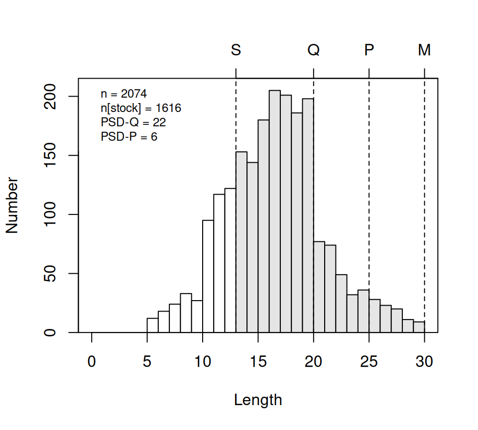
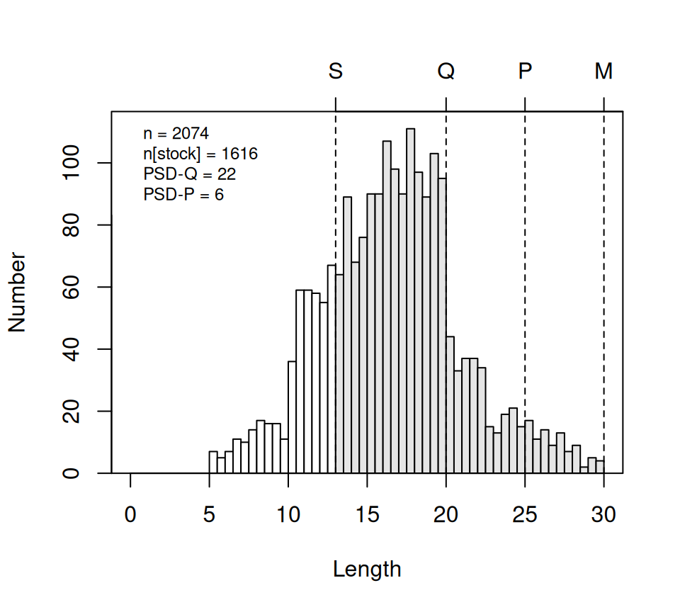

Computing Proportional Size Distribution Metrics in FSA
2025-04-24
Source:vignettes/articles/Computing_PSDs.qmd
Introduction
Summarizing the size structure of fish populations is a common practice for informing fisheries management decisions. One common method for summarizing size structures in North America is to compute the percentage of fish that have reached some minimum size that have also reached a more advanced size. These sizes have been standardized for a number of common North American game fishes and are generally called Gabelhouse lengths, after the author that first described them. The specific percentages are called proportional size distribution (PSD) metrics, and are described in detail in various resources, including Ogle (2015). This article assumes you understand the basics of PSD calculations and will show how to make those calculations using functions in the FSA package.
The following packages are used herein. Note that the FSA functions described here were modified after version 0.9.6 and are thus specific to FSA >v0.9.6.
Creating PSD-Related Length Categories
Gabelhouse Length Categories
Five-cell Gabelhouse (GH) length categories have been deveoped for a number of freshwater game fish in the United States, as well as several non-game fish in the United States and some other fish from outside of the United States. These values have been collated into the PSDlit data.frame1 distributed with FSA and are most easily accessed with psdVal(). For example, the GH length categories for Bluegill are retrieved below.
psdVal("Bluegill")
#> substock stock quality preferred memorable trophy
#> 0 80 150 200 250 300The default is to return lengths in millimeters; however, they can be returned in centimeters or inches with units=
By default, a sixth cell is included that is labeled as “substock” and will always have the value of 0. This can be useful for data that includes individuals shorter than the stock length. Use incl.zero=FALSE to exclude this category.
psdVal("Bluegill",incl.zero=FALSE)
#> stock quality preferred memorable trophy
#> 80 150 200 250 300Use of psdVal() requires spelling (and capitalizing) the species name as it appears in PSDlit. One can see all species names available in PSDlit with psdVal() without any arguments.
psdVal()
#>
#> Species name must be one of following. Be careful of spelling and capitalization.
#> [1] "Arctic Grayling" "Bighead Carp"
#> [3] "Bigmouth Buffalo" "Black Bullhead"
#> [5] "Black Carp" "Black Crappie"
#> [7] "Blue Catfish" "Bluegill"
#> [9] "Brook Trout" "Brown Bullhead"
#> [11] "Brown Trout" "Bull Trout"
#> [13] "Burbot" "Chain Pickerel"
#> [15] "Channel Catfish" "Chinook Salmon"
#> [17] "Common Carp" "Cutthroat Trout"
#> [19] "Flathead Catfish" "Freshwater Drum"
#> [21] "Gizzard Shad" "Golden Trout"
#> [23] "Goldeye" "Grass Carp"
#> [25] "Green Sunfish" "Kokanee"
#> [27] "Lake Chubsucker" "Lake Trout"
#> [29] "Largemouth Bass" "Longnose Gar"
#> [31] "Muskellunge" "Northern Pike"
#> [33] "Northern Snakehead" "Paddlefish"
#> [35] "Pallid Sturgeon" "Palmetto Bass"
#> [37] "Pumpkinseed" "Rainbow Trout"
#> [39] "Redbreast Sunfish" "Redear Sunfish"
#> [41] "River Carpsucker" "Rock Bass"
#> [43] "Ruffe" "Sauger"
#> [45] "Saugeye" "Shoal Bass"
#> [47] "Shorthead Redhorse" "Silver Carp"
#> [49] "Smallmouth Bass" "Smallmouth Buffalo "
#> [51] "Splake" "Spotted Bass"
#> [53] "Spotted Gar" "Spotted Sunfish"
#> [55] "Striped Bass" "Striped Bass X White Bass"
#> [57] "Suwannee Bass" "Utah Chub"
#> [59] "Walleye" "Warmouth"
#> [61] "White Bass" "White Catfish"
#> [63] "White Crappie" "White Perch"
#> [65] "White Sucker" "Yellow Bass"
#> [67] "Yellow Bullhead" "Yellow Perch"All parts of the species names in PSDlit are capitalized (e.g., “Brown Trout” and not “brown trout” or “Brown trout”). psdVal() will return an informative error message if your capitalization is not correct but the message will be less informative if your spelling is off.
psdVal("Brown trout")
#> Error: There are no Gablehouse lengths in 'PSDlit' for "Brown trout". However,
#> there is an entry for "Brown Trout" (note spelling, including
#> capitalization).
psdVal("Brwn Trout")
#> Error: There are no Gablehouse lengths in 'PSDlit' for "Brwn Trout". Type
#> 'psdVal()' to see a list of available species.A small number of species have separate length designations for sub-groups of the species. One way to determine this is to simply try a species in psdVal() to see if you receive an informative error about the sub-groups.
psdVal("Brown Trout")
#> Error: "Brown Trout" has Gabelhouse categories for these sub-groups: "lentic"
#> and "lotic". Please use 'group=' to select one of these groups.Then try again with group= as suggested to select a specific group.
psdVal("Brown Trout",group="lotic")
#> substock stock quality preferred memorable trophy
#> 0 150 230 300 380 460Additional Length Categories
There may be times when you desire length categories in addition to the GH lengths. For example, suppose that the minimum length limit for Largemouth Bass is 254 mm. This length can be included as one of the categories by including a vector with the length (or lengths) to addLens=. If the item in the vector is named (second example below) then the value will also be named in the returned result.
Multiple additional lengths can be included.
Adding Length Category Variable for One Species
“Manual” Additions
Suppose that we want to add another variable with the GH length categories to the data.frame of lengths (along with capture location) for Yellow Perch from Saginaw Bay, MI in YPerchSB1 (distributed with the FSAdata package). Note here that lengths are in centimeters.
First, save the GH length categories returned from psdVal() to an object (here called ghYP).
( ghYP <- psdVal("Yellow Perch",units="cm") )
#> substock stock quality preferred memorable trophy
#> 0 13 20 25 30 38Then use lencat() with the length variable as the first argument and the GH length categories object in breaks=.2
YPerchSB1 <- YPerchSB1 |>
mutate(ghcats1=lencat(tl,breaks=ghYP))
peek(YPerchSB1,n=10)
#> tl loc ghcats1
#> 1 7.4 inner 0
#> 230 10.8 inner 0
#> 461 13.9 inner 13
#> 691 15.4 inner 13
#> 922 18.1 inner 13
#> 1152 21.1 inner 20
#> 1383 14.6 outer 13
#> 1613 18.0 outer 13
#> 1844 21.8 outer 20
#> 2074 29.9 outer 25By default, lencat() creates a variable with the length values rather than the category names. Use use.names=TRUE to use category names instead.3
YPerchSB1 <- YPerchSB1 |>
mutate(ghcats2=lencat(tl,breaks=ghYP,use.names=TRUE))
peek(YPerchSB1,n=10)
#> tl loc ghcats1 ghcats2
#> 1 7.4 inner 0 substock
#> 230 10.8 inner 0 substock
#> 461 13.9 inner 13 stock
#> 691 15.4 inner 13 stock
#> 922 18.1 inner 13 stock
#> 1152 21.1 inner 20 quality
#> 1383 14.6 outer 13 stock
#> 1613 18.0 outer 13 stock
#> 1844 21.8 outer 20 quality
#> 2074 29.9 outer 25 preferredA frequency table can then be used to find the number of individuals in each category.
xtabs(~ghcats2,data=YPerchSB1)
#> ghcats2
#> substock stock quality preferred memorable trophy
#> 448 1267 268 91 0 0The reverse cumulative sum of these values, with the substock fish removed, divided by the stock-length sum times 100 are the PSD-X values.
So, for example, 22.1% of fish that reach stock-size also reached quality-size (i.e., “PSD-Q”).
Use the psdAdd() Convenience Function
psdAdd() can be used to add a length categorization variable to a data.frame for all species in the data.frame for which the GH length categories exists. The main argument to psdAdd() is a formula of the form length~species, where length is the observed length variable and species is the name of the species variable. Again, the species must be spelled (and capitalized) as in PSDlit. In these data there is no variable that identified the species, likely because the data contains only one species. Thus, for this example, before psdAdd() can be used, a new variable with the species name must be added.
YPerchSB1 <- YPerchSB1 |>
mutate(species="Yellow Perch",
ghcats3=psdAdd(tl~species,units="cm"))
peek(YPerchSB1,n=10)
#> tl loc ghcats1 ghcats2 species ghcats3
#> 1 7.4 inner 0 substock Yellow Perch substock
#> 230 10.8 inner 0 substock Yellow Perch substock
#> 461 13.9 inner 13 stock Yellow Perch stock
#> 691 15.4 inner 13 stock Yellow Perch stock
#> 922 18.1 inner 13 stock Yellow Perch stock
#> 1152 21.1 inner 20 quality Yellow Perch quality
#> 1383 14.6 outer 13 stock Yellow Perch stock
#> 1613 18.0 outer 13 stock Yellow Perch stock
#> 1844 21.8 outer 20 quality Yellow Perch quality
#> 2074 29.9 outer 25 preferred Yellow Perch preferredThe PSD-X metrics can then be computed as before.
Using psdCalc() to Compute All PSD-X and PSD-X-Y Values for One Species
All of that (in the previous sections) is a bit tedious and, more importantly, does not compute confidence intervals for the values.4 psdCalc() provides a convenient interface for computing all of the PSD metrics, with confidence intervals, for a data.frame with one species. Before illustrating psdCalc(), I returned to the original YPerchSB1 data.frame without the changes made in the previous sections.
peek(YPerchSB1,n=6)
#> tl loc
#> 1 7.4 inner
#> 415 14.9 inner
#> 830 16.3 inner
#> 1244 7.6 outer
#> 1659 18.5 outer
#> 2074 29.9 outerpsdCalc() takes a formula of the form ~length as the first argument with the appropriate data.frame in data=. As with psdVal(), psdCalc() requires the correctly spelled (and capitalized) species name in species= and units in units=.5
psdCalc(~tl,data=YPerchSB1,species="Yellow Perch",units="cm")
#> Estimate 95% LCI 95% UCI
#> PSD-Q 22 20 25
#> PSD-P 6 4 7
#> PSD S-Q 78 75 80
#> PSD Q-P 16 14 19
#> PSD P-M 6 4 7By default, PSD metrics that are 0 are dropped from the results. They can be included by using drop0Est=FALSE.
psdCalc(~tl,data=YPerchSB1,species="Yellow Perch",units="cm",drop0Est=FALSE)
#> Estimate 95% LCI 95% UCI
#> PSD-Q 22 20 25
#> PSD-P 6 4 7
#> PSD-M 0 NA NA
#> PSD-T 0 NA NA
#> PSD S-Q 78 75 80
#> PSD Q-P 16 14 19
#> PSD P-M 6 4 7
#> PSD M-T 0 NA NAThe PSD-X (in contrast to PSD X-Y) values are referred to here as “traditional” PSD metrics as they show the percent of stock-sized fish that were also X-sized. For example, PSD-P is the percent of stock-sized fish that also reach preferred-size. In this example, 6% (95%CI: 4%-7%) of stock-sized fish attained preferred size.
Just the “traditional” metrics may be returned by including what="traditional".
psdCalc(~tl,data=YPerchSB1,species="Yellow Perch",units="cm",what="traditional")
#> Estimate 95% LCI 95% UCI
#> PSD-Q 22 20 25
#> PSD-P 6 4 7The PSD X-Y values are referred to here as “incremental” PSD metrics as they show the percent of stock-sized fish that were between X- and Y-sized. For example, PSD Q-P is the percent of stock-sized fish that reached quality-size but had not reach preferred-size. In this example, 16% (95%CI: 14%-19%) of stock-sized fish attained quality but not preferred size.
Just the “incremental” metrics may be returned by including what="incremental".
psdCalc(~tl,data=YPerchSB1,species="Yellow Perch",units="cm",what="incremental")
#> Estimate 95% LCI 95% UCI
#> PSD S-Q 78 75 80
#> PSD Q-P 16 14 19
#> PSD P-M 6 4 7Sometimes6 it is useful to see the intermediate values (i.e., the numbers) that were used to calculate the PSD metrics. These values can be included in the results by including showIntermediate=TRUE. In each line below, the “Estimate” should be “num” divided by “stock” times 100 (and then rounded to a whole number).
psdCalc(~tl,data=YPerchSB1,species="Yellow Perch",units="cm",
drop0Est=FALSE,showIntermediate=TRUE)
#> num stock Estimate 95% LCI 95% UCI
#> PSD-Q 358 1626 22 20 25
#> PSD-P 98 1626 6 4 7
#> PSD-M 0 1626 0 NA NA
#> PSD-T 0 1626 0 NA NA
#> PSD S-Q 1268 1626 78 75 80
#> PSD Q-P 260 1626 16 14 19
#> PSD P-M 98 1626 6 4 7
#> PSD M-T 0 1626 0 NA NAAdditional lengths may be included in psdCalc() as described for psdVal().
psdCalc(~tl,data=YPerchSB1,species="Yellow Perch",units="cm",
addLens=c(17.5,27.5))
#> Estimate 95% LCI 95% UCI
#> PSD-17.5 53 49 56
#> PSD-Q 22 19 25
#> PSD-P 6 4 7
#> PSD-27.5 2 1 3
#> PSD S-17.5 47 44 51
#> PSD 17.5-Q 30 27 34
#> PSD Q-P 16 14 19
#> PSD P-27.5 4 2 5
#> PSD 27.5-M 2 1 3
psdCalc(~tl,data=YPerchSB1,species="Yellow Perch",units="cm",
addLens=c("minSlot"=17.5,"maxSlot"=27.5))
#> Estimate 95% LCI 95% UCI
#> PSD-minSlot 53 49 56
#> PSD-Q 22 19 25
#> PSD-P 6 4 7
#> PSD-maxSlot 2 1 3
#> PSD S-minSlot 47 44 51
#> PSD minSlot-Q 30 27 34
#> PSD Q-P 16 14 19
#> PSD P-maxSlot 4 2 5
#> PSD maxSlot-M 2 1 3Using psdPlot() to Visualize the PSD Metrics
psdPlot() can be used to produce a histogram of lengths with different colors for substock- and stock-size fish, vertical lines depicting the GH length categories, and the “traditional” PSD metrics shown. The basic arguments to psdPlot() are the same as those to psdCalc().
psdPlot(~tl,data=YPerchSB1,species="Yellow Perch",units="cm")
There may be times where the length category lines don’t fall on the breaks for the histogram bars. You may be able to ameliorate this issue by changing the width of the breaks with w= or where the breaks start with startcat=.7
psdPlot(~tl,data=YPerchSB1,species="Yellow Perch",units="cm",w=0.5)
This plot is meant to be illustrative and not of “publication-quality.” However, some aspects of the plot can be modified to make some changes in appearance. See ?psdPlot for documentation of these other arguments.
Adding a Length Category Variable for All Species
The real value of psdAdd() is that it can be used to efficiently add length categories for multiple species in a single data.frame. For example, InchLake2 distributed with FSAdata contains lengths for several species captured from Inch Lake. Note that lengths are in inches here.
data("InchLake2",package="FSAdata")
peek(InchLake2,n=10)
#> netID fishID species length weight year
#> 1 206 501 Bluegill 1.5 0.7 2008
#> 57 16 208 Black Crappie 11.6 380.0 2007
#> 115 101 583 Bluegill 5.5 48.0 2008
#> 172 102 642 Bluntnose Minnow 2.1 1.3 2008
#> 229 116 760 Largemouth Bass 2.8 2.0 2008
#> 287 109 843 Largemouth Bass 13.1 460.0 2008
#> 344 130 902 Largemouth Bass 10.1 173.0 2008
#> 401 6 178 Bluegill 6.2 62.0 2007
#> 459 12 45 Bluntnose Minnow 2.7 6.0 2007
#> 516 4 127 Bluegill 6.6 90.0 2007psdAdd() can be used as described previously (i.e., with a formula of the form length~species and units=) to add GH length categories for all species in the data.frame for which GH length categories exist in PSDlit. Note that a message will be issued identifying the species in the data.frame for which GH length categories do not exist. The new variable will be NA for these species.
InchLake2 <- InchLake2 |>
mutate(ghcats1=psdAdd(length~species,units="in"))
#> Species in the data with no Gabelhouse (PSD) lengths in `PSDlit`: "Iowa
#> Darter", "Bluntnose Minnow", "Tadpole Madtom", and "Fathead Minnow".
peek(InchLake2,n=10)
#> netID fishID species length weight year ghcats1
#> 1 206 501 Bluegill 1.5 0.7 2008 substock
#> 57 16 208 Black Crappie 11.6 380.0 2007 preferred
#> 115 101 583 Bluegill 5.5 48.0 2008 stock
#> 172 102 642 Bluntnose Minnow 2.1 1.3 2008 <NA>
#> 229 116 760 Largemouth Bass 2.8 2.0 2008 substock
#> 287 109 843 Largemouth Bass 13.1 460.0 2008 quality
#> 344 130 902 Largemouth Bass 10.1 173.0 2008 stock
#> 401 6 178 Bluegill 6.2 62.0 2007 quality
#> 459 12 45 Bluntnose Minnow 2.7 6.0 2007 <NA>
#> 516 4 127 Bluegill 6.6 90.0 2007 qualitySummaries by species requires some work. First, remove all substock-sized individuals.
Inch_mod <- InchLake2 |>
filter(ghcats1!="substock") |>
droplevels()Incremental PSD metrics (i.e, PSD X-Y) are quickly computed with xtabs() and prop.table().
freq <- xtabs(~species+ghcats1,data=Inch_mod)
iPSDs <- prop.table(freq,margin=1)*100
round(iPSDs,1)
#> ghcats1
#> species stock quality preferred memorable
#> Black Crappie 20.0 0.0 32.0 48.0
#> Bluegill 30.4 44.1 25.5 0.0
#> Largemouth Bass 32.9 59.8 7.3 0.0
#> Pumpkinseed 12.5 75.0 12.5 0.0
#> Yellow Perch 0.0 52.2 43.5 4.3Traditional PSD metrics (i.e., PSD-X) can be found by apply()ing rcumsum()8 to each row (i.e., MARGIN=1) of the PSD X-Y values. The result from apply() will be oriented opposite of what is desired (i.e., species a columns rather than rows), so it should be t()ransposed.
Additional non-GH length categories can be used with psdAdd() through addLens() similar to what was described for psdVal() and psdCalc(). However, a named list must be given to addLens() that as named vectors for each species for what an additional length is added. An example for this is given in the documentation for psdAdd().
The use of psdAdd() is fairly efficient if interest is only in the point PSD-X or PSD X-Y values. If one needs confidence intervals for these values then it is probably best to use psdCalc() on separate data.frames for each species. This is demonstrated below for Yellow Perch and Bluegill from the Inch Lake data.
InchYP <- InchLake2 |> filter(species=="Yellow Perch")
psdCalc(~length,data=InchYP,species="Yellow Perch",units="in")
#> Warning: Some category sample size <20, some CI coverage may be lower than 95%.
#> Estimate 95% LCI 95% UCI
#> PSD-Q 100 NA NA
#> PSD-P 48 22 73
#> PSD-M 4 0 15
#> PSD Q-P 52 27 78
#> PSD P-M 43 18 69
#> PSD M-T 4 0 15